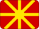

North Macedonia
History
Socialist Republic of Macedonia introduced a new form of state rule.
The independence referendum gave voters a direct role in North Macedonia's move toward sovereignty.
Short facts
RegionSoutheast Europe / Balkans
LanguageMacedonian
Time zoneCET (UTC+1)
Drives onRight
Worth seeing
- Lake Ohrid: UNESCO lake and town, one of Europe's oldest and deepest lakes.
- Ohrid Old Town: Byzantine churches and medieval architecture on the shores of the lake.
- Mavrovo National Park: Wolves, lynx and bears in a wild mountain landscape with a ski resort.
 Skopje
SkopjePlanning questions
What is North Macedonia known for?Lake Ohrid, Ohrid Old Town, Mavrovo National Park.
What is the capital?Skopje.
Which language is useful?Macedonian.
When is the national day?8 September.
Upcoming events
 North Macedonia Independence Day8 Sep 2026 · North Macedonia
North Macedonia Independence Day8 Sep 2026 · North MacedoniaNo future North Macedonia-linked events are active in the current dataset.
Food & drink
 Tavče gravče
Tavče gravče Rakia
RakiaKnown for
Lake OhridUNESCO laketowndeepest lakes.Ohrid Old TownByzantine churchesMavrovo National ParkWolves
 Alpine Skiing
Alpine Skiing Nature & places
Nature & places